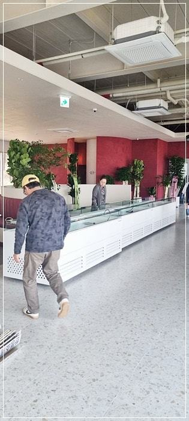
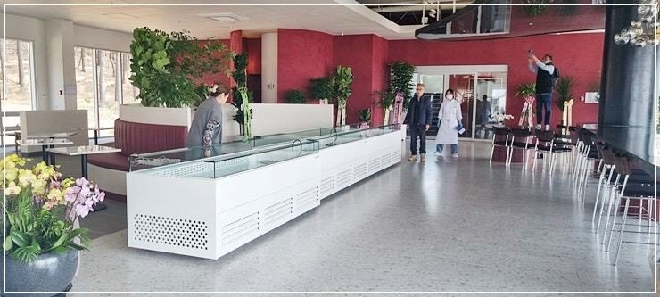
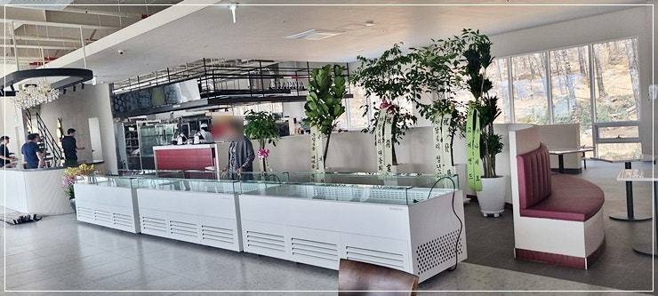
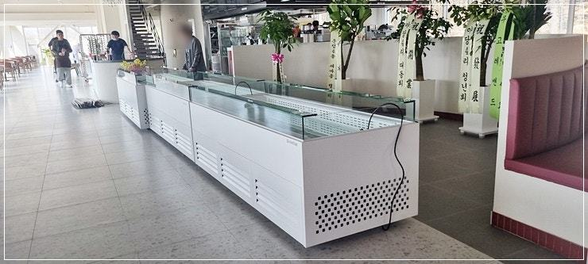
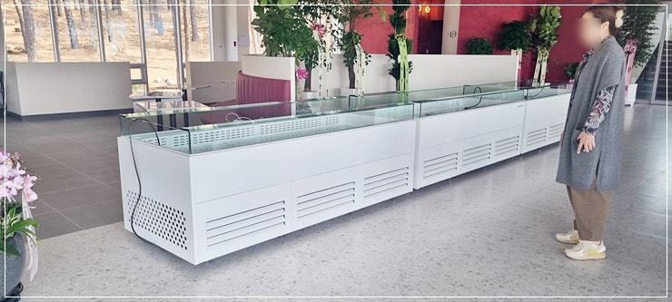

오픈쇼케이스
샐러드가게 오픈 체크리스트, 냉장 설비부터 순서대로

샐러드가게 오픈 체크리스트에서 냉장 설비는 판매용 오픈쇼케이스, 재료 손질용 냉장 작업대, 원재료 보관 냉장고 세 가지로 나눠 순서대로 정하시는 것이 좋습니다. 특히 오픈쇼케이스는 제작과 설치에 시간이 걸리고 매장 동선의 중심이 되므로 인테리어 도면 단계에서 가장 먼저 확정하세요.
안녕하세요. 샐러드·도시락 매장의 오픈쇼케이스를 맞춤으로 만드는 한성쇼케이스입니다.
샐러드가게 오픈을 앞둔 사장님들은 메뉴 개발, 포장재, 배달 앱 등록까지 챙길 것이 정말 많습니다. 그러다 보면 냉장 설비는 인테리어가 끝날 무렵에야 알아보시게 되고, 오픈 날짜가 코앞인데 쇼케이스가 아직 안 들어온 상황이 생기기도 합니다.
샐러드는 채소가 주재료라 온도와 습도에 민감하고, 손님이 직접 집어 가는 테이크아웃 비중이 높습니다.
그만큼 냉장 설비가 매장 운영의 뼈대가 됩니다.
오늘은 샐러드가게 오픈 전에 냉장 설비를 어떤 순서로 정하고 무엇을 확인하면 좋은지 체크리스트 형태로 정리해 보겠습니다.
1. 도면 단계: 오픈쇼케이스 자리부터
샐러드가게에서 오픈쇼케이스는 손님이 들어와 가장 먼저 보고, 직접 집어 가는 판매대입니다. 출입문에서 계산대까지 가는 길 중간에 두면 자연스럽게 상품을 보고 고를 수 있습니다.
이 자리가 정해져야 계산대, 포장대, 주방 출입구 위치도 정리됩니다.
오픈쇼케이스는 전면이 열린 구조라 출입문 바람이나 냉난방기 바람이 정면으로 닿지 않는 자리가 좋습니다.
뒤쪽이나 아래쪽 열 배출 공간도 도면에 미리 표시해 두세요.
- 출입문과 계산대 사이 동선 위에 두세요.
- 냉난방기 바람 방향을 확인하세요.
- 열 배출 공간을 도면에 남겨 두세요.
2. 판매량에 맞춘 크기와 단수
하루에 진열할 샐러드, 샌드위치, 음료 가짓수를 먼저 적어 보세요. 상품이 적은데 쇼케이스가 너무 크면 칸이 비어 보여 손이 덜 가고, 반대로 작으면 점심 피크에 채워 넣느라 바쁩니다.
샐러드 볼은 넓고 낮고, 음료는 좁고 높습니다. 위쪽 칸은 음료, 눈높이 칸은 대표 샐러드, 아래 칸은 사이드 메뉴처럼 칸마다 무엇을 둘지 정해 두면 단수와 칸 높이를 정확히 잡을 수 있습니다.
포장 용기 크기도 미리 정해 두세요. 용기가 바뀌면 칸 높이가 맞지 않아 진열이 어색해지는 경우가 많습니다.
사용할 용기 샘플을 상담 때 보여 주시면 칸 높이를 그에 맞춰 잡을 수 있습니다.


3. 주방 쪽 냉장 설비
판매용과 별개로 채소를 손질하고 토핑을 담는 작업 공간에도 냉장이 필요합니다. 작업대 아래가 냉장고인 테이블 냉장고를 두면 재료를 꺼내고 바로 조리할 수 있어 동선이 짧아집니다.
원재료를 보관하는 냉장고는 채소, 소스, 단백질 재료를 구역별로 나눠 둘 수 있는 크기로 정하세요. 판매용 오픈쇼케이스를 재료 보관용으로 함께 쓰면 문 없는 구조라 재료 상태를 지키기 어렵습니다.
- 손질용 테이블 냉장고
- 원재료 보관 냉장고
- 판매용과 보관용은 따로
4. 오픈 전 주에 할 점검
설비가 들어오면 오픈 며칠 전에 미리 전원을 켜 두고 온도가 안정되는지 확인하세요. 전용 콘센트에 꽂았는지, 다른 주방 기기와 차단기를 함께 쓰고 있지 않은지도 함께 봐야 합니다.
마감 후에는 오픈쇼케이스 전면에 나이트 커버를 덮는 습관을 처음부터 들이시면 밤사이 냉기 손실을 줄일 수 있습니다.
첫 주는 시간대별로 온도를 기록해 두면 이후 이상이 생겼을 때 비교 기준이 됩니다.
체크리스트
- 오픈쇼케이스 위치와 동선 확정
- 진열 가짓수와 칸별 상품 구성
- 손질용 테이블 냉장고
- 원재료 보관 냉장고
- 전용 콘센트와 차단기
- 오픈 전 시운전과 온도 기록
현장에서 자주 보는 경우: 매장 규모에 맞춰 높이와 크기를 다시 잡는 오픈쇼케이스
사업장 오픈을 앞두고 오픈쇼케이스 설계에서 가장 많이 고민하시는 부분은 크기와 높이입니다. 손님이 직접 다가와 상품을 집어 가는 장비인 만큼, 매장 규모에 비해 너무 낮거나 작으면 존재감이 약하고, 너무 크면 동선을 막습니다.
규모가 큰 오픈쇼케이스를 제작했던 매장에서도 공간 분위기에 맞춰 사이즈와 재질을 세심하게 정하고, 손님이 사용하는 높이를 직접 확인한 뒤 다른 인테리어 영역과 어울리도록 디자인했습니다.
설치 후에는 사후 관리 A/S 전담팀이 불편한 부분에 대응합니다.









자주 묻는 질문
오픈쇼케이스는 오픈 얼마 전에 주문해야 하나요?
맞춤 제작은 상담, 설계, 제작, 설치 단계를 거치므로 인테리어 도면이 나오는 시점에 상담을 시작하시는 것이 좋습니다.
정확한 일정은 크기와 구성에 따라 상담 때 안내해 드립니다.
샐러드와 음료를 한 오픈쇼케이스에 같이 둬도 되나요?
칸을 나눠 함께 진열하는 매장이 많습니다. 다만 음료는 높이가 있고 샐러드는 넓이가 필요하니 칸마다 높이를 다르게 잡아 두시는 것이 좋습니다.
매장이 작아서 오픈쇼케이스를 놓을 자리가 애매합니다.
벽면 폭과 깊이를 알려 주시면 그 자리에 맞춘 슬림한 구성으로 제작할 수 있습니다. 동선이 막히지 않도록 깊이를 우선 조정해 드립니다.
매장 조건에 맞춰 만드는 한성쇼케이스
원하시는 제품 사진과 설치할 공간 사진만 보내 주셔도 매장에 맞는 구성을 추천해 드립니다.
- 전국 240여 개 A/S 전담 센터 운영
- 본사 대량 자재 매입으로 품질 대비 합리적인 가격
- 유럽제·삼성 냉각 콤프레셔 적용
- 국내 최초 쇼케이스 전문 디자이너 상주
매장 폭과 원하는 진열 구성을 알려 주세요. 실측과 견적을 안내해 드립니다.
031-986-2458